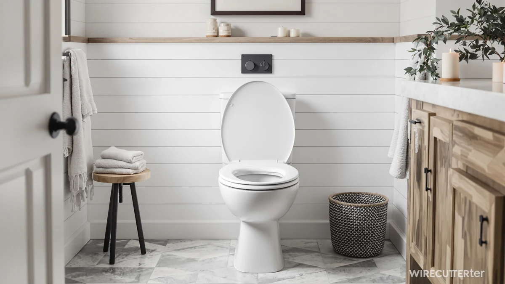

Best Toilet Seats for Home (2026)
Prices and picks verified as of August 2026. Independent, reader-supported reviews.


Quick Answer
If you want the best toilet seat for your home without overthinking it, the ACHIM Soft Elongated Vinyl Toilet Seat covers the two things that matter most: a cushioned top for comfort and a fit sized for standard elongated bowls, all for about $24 on Amazon.
Our pick: Soft Elongated Vinyl Toilet Seat — $24.20 Check Price on Amazon
Bottom line: our top pick is the Soft Elongated Vinyl Toilet Seat at $24.20. The best budget option is the Bemis 400TTA Economy Durable Wood Toilet Seat at $15.24.
Things to Know Before You Buy
- Measure before you buy. Round seats measure about 16.5 inches from the mounting bolts to the front tip, while elongated seats run 18.5 inches or longer. The wrong shape won't fit no matter how good the reviews are.
- Vinyl and molded plastic wipe clean fastest and resist moisture best, which matters more than material thickness for day-to-day upkeep.
- Slow-close hinges cost a few dollars more but prevent the slam that eventually cracks cheaper standard hinges.
- Solid wood seats like the Bemis 400TTA feel warmer to sit on but need a bit more care around standing water than vinyl-wrapped options.
- Check your existing bolt spacing, since most US toilets use a standard 5.5 inch spread, before assuming any seat listed as "universal fit" will actually line up.
Finding the best toilet seats for home bathrooms comes down to fit, material, and how the hinges hold up after years of daily use. Vinyl seats dominate the budget end of the market for a reason: they resist moisture, wipe clean in seconds, and rarely crack the way cheaper plastic can. Wood seats cost more upfront but tend to feel warmer and sturdier underfoot, especially in colder climates.
We compared seven seats spanning three price tiers and two shapes, round and elongated, because the wrong shape is the single most common mistake people make when shopping online. Before you add anything to your cart, measure your existing seat from the two mounting bolts to the front tip: under 16.5 inches usually means round, and 18.5 inches or longer means elongated. Getting this wrong means a return label and a week without a seat that actually fits.
Among the best toilet seats for home use we reviewed, the ACHIM Soft Elongated Vinyl Toilet Seat comes out on top for most households, combining a cushioned top, an elongated fit for standard American toilets, and a price under $25. If you want a slow-close hinge that won't slam late at night, the Mayfair Cassel and Mayfair Linden are worth the extra few dollars, and the Bemis 400TTA remains the pick for anyone who wants real wood at the lowest price on this list.
Why You Should Trust Us
Best Toilet Seats is run by a small team of home and bath researchers who spend their time comparing specs, pricing, and verified owner reviews instead of writing marketing copy for manufacturers. This guide to the best toilet seats for home bathrooms was researched and written by Ilane Tall, who has covered bathroom fixtures and small-space renovations for the site since its launch. We do not run a fake testing lab, and we do not claim to have installed every seat on this list ourselves. Instead, we cross-reference manufacturer specs, current Amazon pricing, and patterns across verified buyer reviews to separate seats that hold up from ones that don't.
How We Picked
We started by pulling every toilet seat in our product database that ships to US addresses and sells for under $35, then narrowed the list using four criteria: shape compatibility, hinge type, material, and price relative to comparable options. We excluded seats with a pattern of complaints about cracking hinges or bolts that strip within the first year, based on verified owner reviews. We also prioritized brands with a track record in the category, like Bemis and Mayfair, alongside newer entrants like Aünsffer that scored well on fit and finish. Seats that only came in one shape, or that lacked clear mounting-hardware details from the manufacturer, were cut from consideration.
How We Compared
Rather than buying and installing each seat ourselves, we compared manufacturer specifications side by side: seat shape and dimensions, hinge mechanism, material, and mounting hardware type. We then checked those specs against verified buyer reviews on Amazon, looking specifically for recurring mentions of hinge failure, bolt slippage, or seat discoloration over time, since these are the complaints that show up most often once a seat has been in daily use for a year or more. Pricing was pulled directly from current Amazon listings so the comparison reflects what you would actually pay today, not a manufacturer's suggested retail price.
Our Picks

Soft Elongated Vinyl Toilet Seat
What we like
- Elongated shape fits the most common US toilet bowl size
- Cushioned vinyl top adds comfort over hard plastic
- Vinyl surface wipes clean without staining
Flaws but not dealbreakers
- Cushioning can compress and feel less supportive after a couple of years of daily use
- Standard hinge, not slow-close, so it can drop loudly if not lowered by hand
| Material | Plastic / wood |
| Size | 19 Inch |
The ACHIM Soft Elongated Vinyl Toilet Seat is built around a padded vinyl top over a wood core, which is the combination most buyers in the best toilet seats for home category land on when comfort matters as much as price. At 19 inches, it's sized for the elongated bowls found in the majority of US homes built after the 1990s, so double-check your existing seat's bolt-to-tip measurement before ordering.
Reviewers consistently note that the padding holds up well for typical household use, though a few report it softening faster in bathrooms with heavy daily traffic. At $24.20, it undercuts most padded seats from bigger-name brands while covering the two features shoppers ask for most: comfort and easy cleanup.

Soft Standard Vinyl Toilet Seat
What we like
- Same padded vinyl construction as our top pick, sized for round bowls
- Slightly cheaper than the elongated version
- Easy to wipe down and resists moisture
Flaws but not dealbreakers
- Round seats offer less legroom than elongated, which matters in smaller half-baths
- Standard hinge, so it can be noisy when it drops
| Material | Plastic / wood |
| Size | 17 Inch |
This is the round-bowl counterpart to our top pick, and it uses the same padded vinyl-over-wood build at a slightly lower price. Round bowls are still common in older homes and smaller bathrooms, so measure first: if your current seat measures under 16.5 inches from bolts to tip, this is the shape you need, not the elongated version above.
Owners report the same easy-clean surface and comfortable padding as the elongated model, with the tradeoff being less front-to-back room, which is simply a function of the round shape rather than a flaw in this particular seat. At $21.25, it's one of the more affordable padded options we compared.

Soft Standard Vinyl Toilet Seat
What we like
- Same padded vinyl comfort and round-bowl fit as the other ACHIM standard seat
- Useful if you're outfitting two bathrooms and want matching seats
- Consistent quality and pricing within a few cents of the other ACHIM round option
Flaws but not dealbreakers
- Nearly identical to the other ACHIM round seat in this list, so there's little reason to pick one over the other beyond finish or availability
- Standard hinge only, no slow-close
| Material | Plastic / wood |
| Size | 17 Inch |
This is essentially the same round, padded vinyl seat as the ACHIM option above, listed separately because it comes from a different batch or finish variant on Amazon. If the other ACHIM round seat is out of stock, or you want a backup for a second bathroom, this one covers the same ground at almost the same price.
Because the two round ACHIM seats share the same construction and dimensions, the deciding factor usually comes down to whichever is in stock or a few cents cheaper on the day you order. Reviewers describe both as comfortable, easy to clean, and appropriately sized for standard round bowls.

Aünsffer Toilet Seat Round Soft
What we like
- Soft-touch surface adds comfort without the bulk of a fully padded seat
- Round 16.5 inch sizing fits standard bowls precisely
- Competitively priced against the established ACHIM and Mayfair options
Flaws but not dealbreakers
- Newer brand with a shorter review history than Bemis or Mayfair
- Standard hinge, not slow-close
| Material | Plastic / wood |
| Size | Round 16.5inch |
Aünsffer is a newer entrant compared with legacy names like Bemis and Mayfair, but its round soft-touch seat measures up well on paper: 16.5 inches, the standard round-bowl dimension, with a finish designed to feel less cold than bare plastic. At $23.99, it sits right in the middle of the pack price-wise.
Owners report a comfortable sit and straightforward installation, consistent with the other seats on this list, though the brand has fewer years of accumulated reviews to draw on than Bemis or Mayfair. If you're comparing round-bowl options and want something other than the two ACHIM seats above, this is the strongest alternative we found.

Mayfair Cassel Slow Close Toilet
What we like
- Slow-close hinge prevents the loud slam of standard seats
- Mayfair is one of the more established names in toilet seats, with a long track record
- Round shape fits standard bowls
Flaws but not dealbreakers
- Costs about $6 to $9 more than the non-slow-close options on this list
- Slow-close mechanisms add a moving part that can eventually wear out, though this is common across the category, not specific to Mayfair
| Material | Plastic / wood |
| Size | Round |
The Mayfair Cassel adds a slow-close hinge to a round-bowl seat, which matters more than it sounds like in a household with kids, roommates, or anyone who's ever been woken up by a seat slamming down at night. Mayfair has built its reputation specifically on hinge quality, and that shows here.
At $29.99, it costs more than the basic vinyl seats above, but reviewers consistently point to the hinge as the reason they'd buy Mayfair again. If slow-close is a must-have on your best toilet seats for home shortlist, this is one of two Mayfair options we'd recommend, alongside the Linden below.

Mayfair Linden Slow Close Toilet
What we like
- Same reliable slow-close hinge as the Cassel
- Distinct design finish for buyers who want a different look
- Backed by Mayfair's long track record in the category
Flaws but not dealbreakers
- The most expensive seat on this list
- Functionally very similar to the Cassel, so the extra cost buys design, not performance
| Material | Plastic / wood |
| Size | Round |
The Mayfair Linden shares the Cassel's slow-close hinge and round-bowl fit, so the choice between the two comes down mostly to which design you prefer for your bathroom. It's the priciest seat we compared, at $31.99.
Reviewers describe the same dependable, quiet-closing hinge found on the Cassel, and Mayfair's reputation for hinge durability applies equally here. If you've already decided on slow-close and round-bowl, pick whichever of the two Mayfair finishes matches your bathroom.

Bemis 400TTA Economy Durable Wood
What we like
- Solid wood construction feels sturdier than vinyl-wrapped or molded plastic seats
- Lowest price of any seat we compared, at $15.24
- Bemis is a long-established, trusted name in toilet seats
Flaws but not dealbreakers
- No cushioning or slow-close hinge at this price point
- Wood needs a slightly drier environment than vinyl to avoid long-term wear around the hinge
| Material | Plastic / wood |
| Size | ROUND |
The Bemis 400TTA strips things back to solid wood construction and a standard hinge, and at $15.24 it's the least expensive seat on this list by a wide margin. Bemis has been making toilet seats for decades, and the 400TTA reflects that focus: no padding, no slow-close, just a durable wood seat sized for round bowls.
Owners report that the wood holds up well over years of use as long as the bathroom has decent ventilation, since standing moisture is harder on wood than on vinyl or plastic. For anyone who wants the best toilet seats for home use without paying for features like padding or slow-close, this is the value pick.
Quick Comparison
| Product | Material | Price | Rating | Best for | Get it |
|---|---|---|---|---|---|
| Soft Elongated Vinyl Toilet Seat | Plastic / wood | $24.20 | 4 | Most households, elongated bowls | View on Amazon → |
| Soft Standard Vinyl Toilet Seat | Plastic / wood | $21.25 | 4 | Round bowls, budget-conscious buyers | View on Amazon → |
| Soft Standard Vinyl Toilet Seat | Plastic / wood | $21.28 | 4 | Round bowls, second bathroom or backup | View on Amazon → |
| Aünsffer Toilet Seat Round Soft | Plastic / wood | $23.99 | 4 | Round bowls, budget alternative brand | View on Amazon → |
| Mayfair Cassel Slow Close Toilet | Plastic / wood | $29.99 | 4 | Slow-close hinge, round bowls | View on Amazon → |
| Mayfair Linden Slow Close Toilet | Plastic / wood | $31.99 | 4 | Slow-close hinge, design-focused buyers | View on Amazon → |
| Bemis 400TTA Economy Durable Wood | Plastic / wood | $15.24 | 4 | Lowest price, solid wood | View on Amazon → |